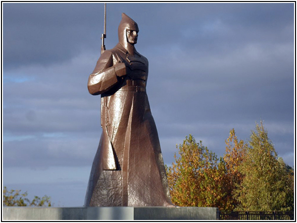

The Monument to the Red Guard Soldier stands on Krepostnaya Hill and is the city’s most recognizable symbol. It was erected in 1976 to commemorate the city’s liberation from the White Guards. Stavropol changed hands several times between the White Guards and the Red Guards, but the latter finally seized power in 1920. “Budyonovets”—as the monument is popularly known—is a sculpture of a soldier holding a rifle; the total height of the monument is seven and a half meters. The monument is popular among young people, as it is a common spot for friends to meet up and for romantic dates. It is also a frequent destination for school field trips and tours for visitors to the city. The observation deck on Krepostnaya Hill offers a beautiful view of the city’s Northwest District.
